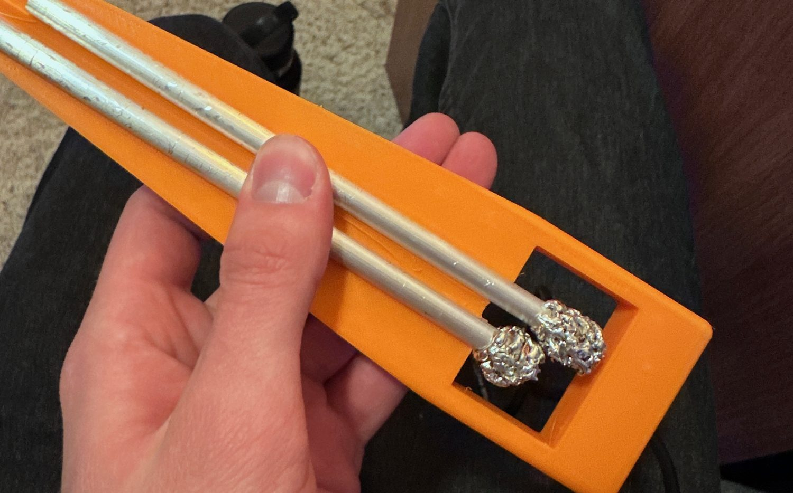
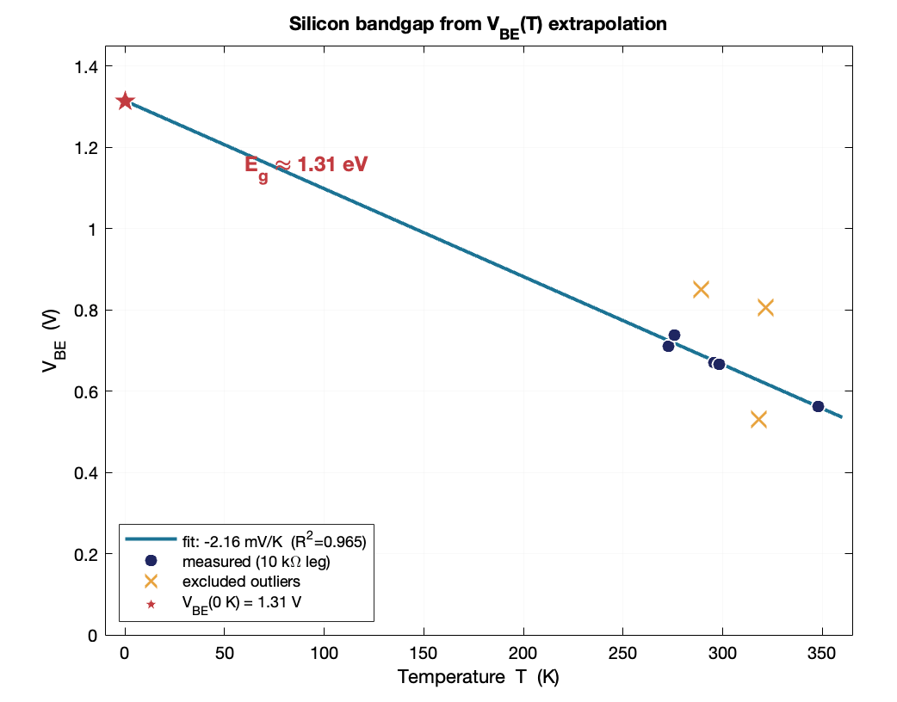

Power electronics
Boost converters, high-voltage capacitor banks, inrush limiting, and the protection design that keeps a charging stage alive. Hundreds of joules, handled deliberately.
Electrical Engineering · University of Denver
I build hardware that has to survive contact with the real world — capacitor banks that store hundreds of joules, sensor payloads flown to the edge of the atmosphere, and boards I mill and solder myself. Currently designing and testing RF antennas at Arsenal Nexus, graduating May 2027.
What I work with
Boost converters, high-voltage capacitor banks, inrush limiting, and the protection design that keeps a charging stage alive. Hundreds of joules, handled deliberately.
KiCad schematic capture and layout, including non-standard footprints and drill specs for in-house milling on an LPKF CNC. Designed, fabricated, and soldered.
Vivaldi antenna design and simulation in MATLAB, with S-parameter measurement on a Rigol RSA5065N in VNA mode. Discrete RF and audio analog design too, down to hand-wound coils and tuned LC front ends.
C and embedded C on STM32, Arduino, and Teensy. Sensor integration over I²C and SPI, data logging, and board bring-up.
LTspice for circuit simulation and MATLAB for signals and systems work, checked against real bench measurements with a scope and multimeter.
SolidWorks and Onshape for parts and enclosures, 3D printing, and comfort with hand and power tools — carried over from leading a FIRST Robotics mechanical subteam.
Selected work

~330 J stored in a 13,200 µF bank charged to 225 V from an 11.1 V LiPo. Inrush held to 85 mA by twelve series resistors picked for wattage rather than resistance, behind a 600 V blocking diode.

Extracted the silicon bandgap and Boltzmann's constant from a single transistor using a 9 V battery and a multimeter, then combined them into a flat 1.31 V reference — within 13–17 % of textbook values, with the gap explained.

Rebuilt a high-altitude balloon payload after two of its four sensors went out of production — a component-selection problem with hard limits. Came in at 120 g and $115 against a 200 g / $147 budget.
Contact
Based in Denver, CO. Open to internships and co-op roles in hardware, power electronics, RF, and embedded systems.